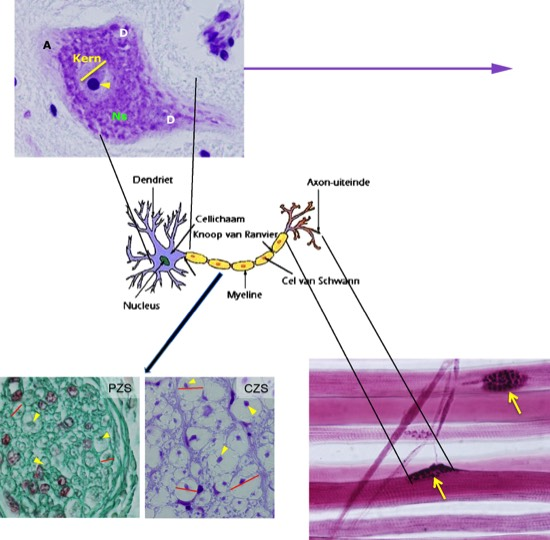

Morfologie van neuronen
Neuronen hebben altijd een cellichaam (perikaryon) en uitlopers (axonen en dendrieten). Deze uitlopers kunnen bijzonder lang zijn (soms tot meer dan 1m).
Oordeel welk deel van het neuron je in beeld hebt.

Dit neuronaal cellichaam is gekleurd met kresylviolet. De grote blazige kern in het midden van het cellichaam bevat voornamelijk fijn verdeeld chromatine en een duidelijke donkerpaarse nucleolus (pijlpunt). Het RER en de vrije polyribosomen kan je in het cytoplasma zien als een patroon van paarse vlekken, de Nissl substantie (Ns), omdat het basische kresylviolet aan de nucleïne’zuren’ bindt. Merk de plaats op waar de dendrieten (D) aan het cellichaam ontspringen. Je kan in dit beeld nog steeds Nissl substantie waarnemen, omdat de basis van de dendrieten nog steeds veel organellen bevat die zichtbaar zijn met deze kleuring. In het axon tref je geen organellen meer aan. De plaats waar het axon vertrekt is dan ook te zien als een veel lichter gekleurde axonheuvel (A).
Zowel in het PZS als in het CZS kan je het verloop van axonen volgen (pijlpunten). In heel veel gevallen kan je de erg bleek gekleurde myelineschede (lijntjes) rond het axon ook zien.
Hier zie je axon-uiteinden (donker gekleurd) in de buurt van een aantal dwarsgestreepte skeletspiercellen. In dit voorbeeld zullen de zenuwcellen ‘communiceren’ met de spiercellen door neurotransmitters vrij te stellen ter hoogte van de ‘eindvoetjes’(pijlen). Deze ‘communicatieverbinding’ noemen we de myoneuronale synaps.
Sluit dit venster en ga terug naar het zelfstudiepakket